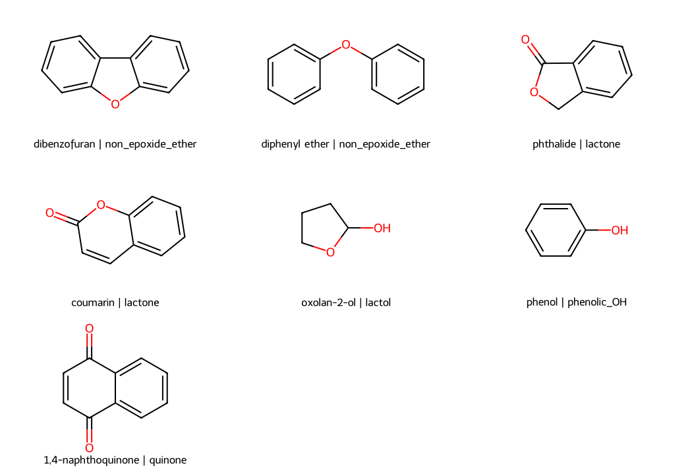

Sanitized graphs and initial geometries. No QM result, RESP charge, or production parameter. Transferability from approximately 4 nm to approximately 10 nm remains to be validated.

| Model | Motif | Ring | Formula | Atoms including H | Electrons | Scope |
|---|---|---|---|---|---|---|
| dibenzofuran_ether_edge | non_epoxide_ether | 5 | C12H8O | 21 | 88 | fused_aromatic_edge_motif_reference |
| diphenyl_ether_bridge_control | non_epoxide_ether | — | C12H10O | 23 | 90 | diaryl_bridge_connectivity_control |
| phthalide_lactone5_edge | lactone | 5 | C8H6O2 | 16 | 70 | fused_aromatic_edge_motif_reference |
| coumarin_lactone6_edge | lactone | 6 | C9H6O2 | 17 | 76 | fused_aromatic_edge_motif_reference |
| oxolan2ol_lactol_control | lactol | 5 | C4H8O2 | 14 | 48 | aliphatic_connectivity_control |
| phenol_aromatic_OH_control | phenolic_OH | — | C6H6O | 13 | 50 | monocyclic_aromatic_OH_control |
| naphthoquinone14_edge | quinone | 6 | C10H6O2 | 18 | 82 | fused_aromatic_edge_motif_reference |
Seven neutral C/H/O references have been prepared, with no radicals in the graph and even electron counts. A closed-shell singlet is an initial assumption: no QM calculation, ground-state check, RESP fit, or MD test has been performed.
Dibenzofuran is a small fused aromatic reference for an edge/defect ether environment; diphenyl ether is a diaryl bridge control. Phthalide, coumarin, and 1,4-naphthoquinone are fused aromatic references; phenol is a monocyclic aromatic control. Oxolan-2-ol is only an aliphatic control for lactol connectivity. None is an equivalent substitute for a complete GO sheet or evidence of the presence/abundance of these groups in our XPS samples.
The ChEBI sources were opened on 5 November 2026. For oxolan-2-ol, the SMILES and InChIKey were retrieved from the indexed J-GLOBAL/JST page; direct access returned HTTP 503. This access limitation is preserved in the source manifest. The graph identities of the seven inputs were also checked using the formula and RDKit InChIKey, before assigning a single geometric stereoisomer where the SMILES does not specify stereochemistry.
The gate distinguishes non-epoxide ether, five-/six-membered cyclic ester, cyclic hemiacetal without a carbonyl, neutral phenol, and conjugated para-quinone. In the models, each atom has a stable ID, element, integer formal charge, role extended_…, graph equivalence, and coordinates. There are no partial charges. The new roles are UNPARAMETERIZED_RESEARCH_REFERENCE; modular.partition_model and the builder are not declared compatible.
This second export restores the RDKit aromatic representation after MMFF94s, before assigning roles and writing JSON/SDF. The coumarin round-trip test checks that bond orders do not change between the two formats. The first export remains historical and must not be used as the current panel.
The seven model.json/initial.sdf/initial.xyz sets contain converged ETKDGv3 + MMFF94s geometries with seed 20261105. These are exclusively initial geometries. geometry_opt/reference.gjf prepares Opt/Freq/MK and Stable at wB97XD/6-311++G(d,p). HF_RESP_template/reference.gjf prepares an template HF/6-31G* MK/Stable with initial coordinates: it must be regenerated using an accepted DFT geometry before any scientific use. No orientations, submissions, or charges have been generated.
HierGO includes ETH for non-epoxide ether, but no explicit set of lactones or COO−. The lactones and lactol here are research extensions inspired by the literature, not established HierGO blocks. The GO rationale and attribution limits are in the local review docs/MISSING_GROUPS_LITERATURE.md; the identities of the small references do not establish the identities of sites in the material.
Transferable parameters require accepted QM, preservation of connectivity and atom order, fitting and validation on contexts excluded from calibration, definitions of nonoverlapping blocks/anchors, and consistent bonded/LJ/scaling conventions. Neutrality of subsets is not automatically imposed on future molecular RESP charges, and EPX parameters are not transferred to ethers, nor COOH parameters to lactones.
Transferability from approximately 4 nm to approximately 10 nm, required for proteins/DNA, remains a requirement to be checked. The final method must preserve the same graph classes and molecular/group charge constraints across sizes. Checks held out from calibration are needed on larger sheets, varying edge/interior environments, low and high oxidation at a fixed size, different sizes at comparable composition, nearby groups, and protonation, with relevant electrostatic/MD controls. New QM for the entire sheet is not required at every production size. A new unsupported environment requires targeted references and a new coverage check.
The actual graph tests were written and observed to fail before implementation. Complete verification: 265 tests passed, including 20 in the extension. Charges, previous scientific inputs, and existing assignment code remain outside the extension.
To regenerate the panel, use a new directory from the PARAMETERIZATION directory:
PYTHONPATH=src uv run --no-project --cache-dir /private/tmp/go-builder-uv-cache --python ../VS_POLL_HIGH_COVERAGE/.venv/bin/python -m go_param.extended_fragments --output-dir reports/EXTENDED_GO_GROUPS_20261105_attempt_003 --cpus 8 --mem-gb 6To rebuild only this README, the 2D panel, and the report:
uv run --no-project --cache-dir /private/tmp/go-builder-uv-cache --python ../VS_POLL_HIGH_COVERAGE/.venv/bin/python reports/EXTENDED_GO_GROUPS_20261105_attempt_002/build_report.pySee also catalog.json, source_manifest.json, artifact_manifest.json and docs/EXTENDED_GO_GROUPS_20261105.md.
c1ccc2c(c1)oc1ccccc12c1ccc(Oc2ccccc2)cc1O=C1OCc2ccccc21O=c1ccc2ccccc2o1OC1CCCO1Oc1ccccc1O=C1C=CC(=O)c2ccccc21Catalog · Sources · Artifact hashes · README